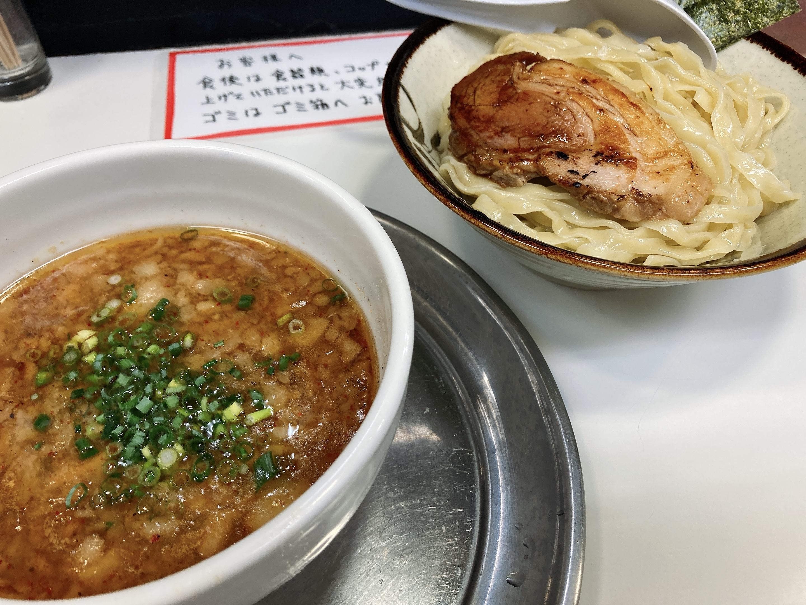
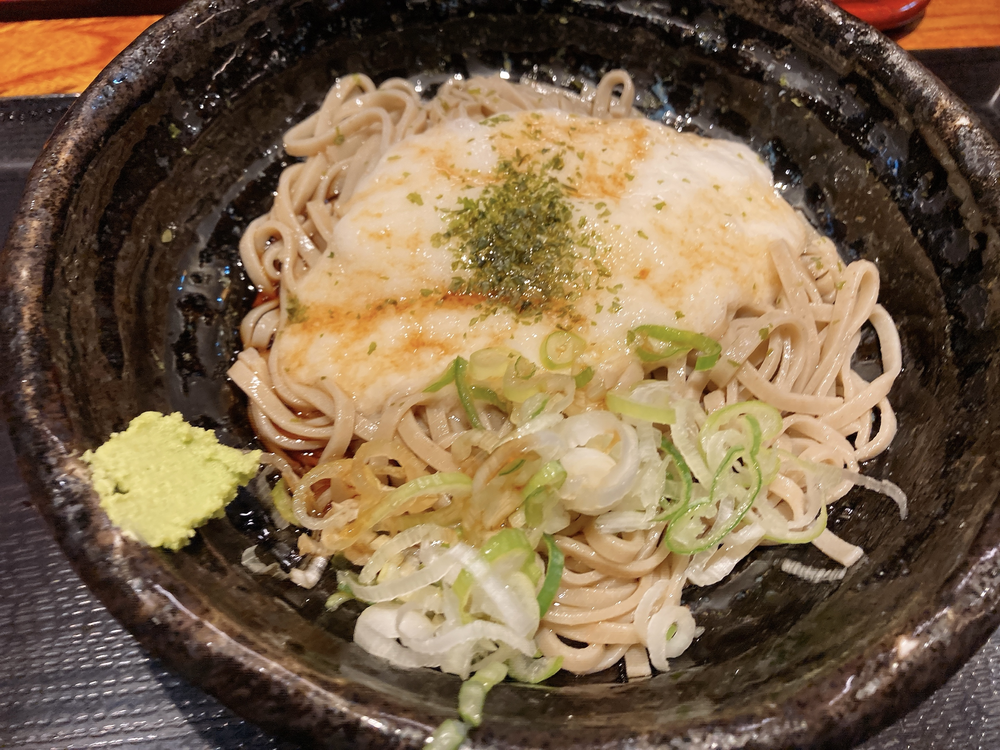

散財祭りの幕開け
夏休みは設備投資をする時期なのです。去年は安いディスプレイとアームを買ってQOLを確保したりしていました。今年はさらに
- ディスプレイを1枚追加で生やす
- 自作PC（ゲーム機）を生やす
- マイクを生やす
- いい椅子を生やす
などの予定が立っております。いや総額やばそう。財布無事なん？……というのは、一応事情を伏せてはおきますが無事なんですねえこれが。こわいこわい。人間に金を与えてはならない。
まあ、まだ財布に余裕があるわけではないので、今日は下見のノリで存在と秋葉原に行ってきました。そして謎の布教によりよくわからないものを買ってしまいました。
なんか買った pic.twitter.com/Zr6DpYi0CZ
— ₍₍⁽⁽🍳₎₎⁾⁾ (@sal_pipr) August 14, 2021
なんかおしゃんな簡易水冷CPUクーラーです。えっ🍳さん自作PC初めてですよね！？！？！？……はい（！？！？！？）。大丈夫なんだろうか。大丈夫って言われたので買ったんですけど。
いや、なんか無理やり買わされたみたいにやっててこのままだとヤバい人なので解説を挟んでおくと、まずこれとある店で結構な割引をやってました。一週間前にそれを知った存在共が話を振ってきたんですけど、🍳さんはどうせ組むならちょっと見た目いい感じにしたい〜というとてもわがままだしとてもよくないタイプのオタクでして、割引されたこの水冷ちゃんが元々案に挙がってた見た目に配慮した空冷CPUクーラーさんとそんなに額の差がないという（それはそれでヤバい）状況になりました。
で、実はなんですけど、この存在共の話を聞きながらPCを組むとなると、必ずどこかで変な要素を入れられそうになるんですね。特に、存在の片方が自作PCのコンセプト被りをなぜか相当気にするタイプで、私にこれを勧めたのは「周りの存在がまだ簡易水冷したことがないから」だったり。他にもなんかよくわからないグラボを勧められたりして気を抜くと大変なことになりそうなんですけど、この簡易水冷ちゃんは存在共の欲求を満たしつつ🍳本人も納得でき、かつそこまで性能等に悪影響の出ない妥協案としてかなり適切なのでは？という発想に落ち着きました。なので買いました。これから変な案出されても簡易水冷してんだからもういいだろってことで堂々と逃げられるってわけです。いや既に敗北したのかもしれない。まあいいや。
あと純粋に実物展示見てかわいかったので。かわいいは正義。きほんはまる。
ちなみに他のパーツを買うのはもう少し先になるので、しばらくはパッケージのこのかわいいまるを眺めながらたのしみだなあって言う人になります。たのしみだねえ。まずは部屋の掃除をしよう。
今日の飯はまず昼に凌駕のつけ麺。

最近昼飯に草しか食ってなかったので、久しぶりの炭水化物脂質攻撃で腹が死にかけた。ちゃんと並にしたんだけどなあ。本当は夜に食べたいんだけどやってない。
夜は秋葉原でよくお世話になってる蕎麦。

冷たいとろろ。今日は山葵を食べない人がいないので山葵が一人分。今年の春頃からとろろをこよなく愛する人になって、今日この店で初めてとろろ頼んだんですけど、とろろたっぷりでとてもとてもアドですね。もっと近かったらもっと通ってた。また買い物で来たらこれを食べましょう。
コミティアにて、🍳が所属しておりますデジタル創作同好会traPから画集が頒布されます。告知が解禁されたので、こちらに寄稿しましたイラストを公開しました。
放課後は友達の家に行くのです pic.twitter.com/z9Ds0fZvkl
— ₍₍⁽⁽φ( '༥' )₎₎⁾⁾ (@slpp_bild) August 14, 2021
テーマは放課後。みんな制服描くだろうなあと思って逆張りしました。えへへ。
小学生ってまだ個人が確立する前のふわふわした状態だと思ってて、どういう性格の子なのか容姿から特定できないようあえて要素をずらしてそれを表現したつもりです。伝わんのかそれ。あとは、容姿に対する一種の圧が本格的にかかる前だろうなという🍳の偏見が短パンとあぐらだったりぽさっと下ろされた癖毛だったりに表れています。小学生当時の自分は酷い癖毛に悩まされて毎日が鬱だったので、やけに生々しいなあと思いながら描いていたりしました。伝わんのかそれ。
こういうお絵描き中に考えていたもろもろって本当は語らない方が品がある（と思ってる）ので、絵の公開場所とは直接繋がっていない場所に書き殴っておけるのは便利。これからもなんか描いたらなんか喋るかも。